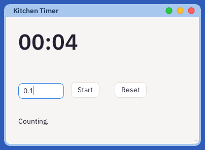
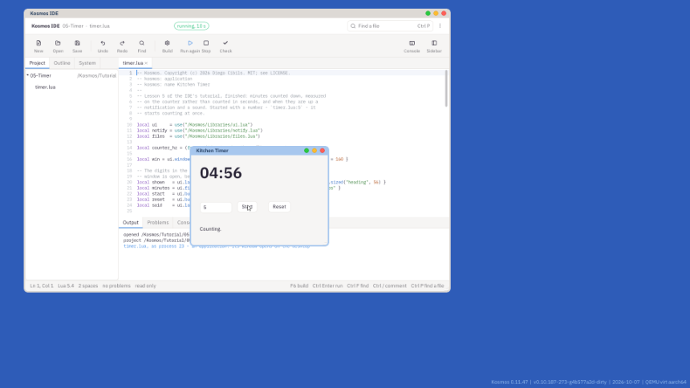

Type how many minutes, press Start, and when they are up the timer says so - in its window, in a notification, and out loud. On the way: the two clocks Kosmos keeps and which one a program uses for what, the notification server, and asking Astra to start a program for you.

What you will have at the end of this lesson.
New, New Project, Lua app, the Hello Window template, and the name Timer. Delete everything after the line that uses the UI kit, and add the notification kit under it:
local notify = use("/Kosmos/Libraries/notify.lua")
local shown = ui.label{ x = 24, y = 20, w = 332, text = "05:00", role = ui.sized("heading", 56) }
A label draws in a role - the face the desktop uses for that kind of text. ui.sized gives the heading's face at 56 pixels. It is asked for after the window is open, because that is when Astra tells the application what its faces are.
Kosmos keeps two clocks, and they do different jobs.
sys.ticks(), is for measuring: how long something took, or how long is left. You met it in lesson 4. It counts very fast and never misses a beat.tick is one of these waits.So the timer waits on one clock and measures on the other:
began = sys.ticks() deadline = began + math.floor(m * 60 * counter_hz)
function clock:tick()
if not deadline then return end
local left = deadline - sys.ticks()
if left <= 0 then
ring()
else
show((left + counter_hz - 1) // counter_hz)
end
end
Start works out the moment it should ring, on the counter. Each tick works out what is left from the counter again, rather than taking one away from a number of seconds. A tick can arrive late - when the machine is busy, or the window was being dragged - and a timer that counted its ticks would fall behind by every late one. One that measures cannot: however late a tick is, it shows the time that is really left.
Rounding up, with counter_hz - 1 added before dividing, means the timer shows 00:01 for the last second rather than 00:00 while there is still time to go.
local function ring()
deadline = nil
show(0)
said.text = "Time's up."
notify.post{ title = "Kitchen Timer", body = minutes.text .. " minutes are up", alert = true }
fs.send("/Running/wm", { type = "launch", program = "beep", args = "880 600" })
end
notify.post sends a notification to the notification server, which keeps it, and Astra shows it as a banner. alert = true makes it one that stays until somebody closes it - a timer that rang while you were out of the room should still be saying so when you come back.
The sound is asked of Astra: /Running/wm is its name, and launch asks it to start a program - here beep, at 880 Hz for 600 milliseconds. The timer does not play anything itself. beep opens a stream to the audio server, which mixes it with whatever else is playing and appears in the Mixer while it sounds.
Press F5, type 0.1 - six seconds - and press the timer's Start.

The timer counting beside the IDE.
The finished lesson is in Lesson's Project, under the three dots: 05-Timer. It also takes its minutes as its argument, as Notes took a note: started as timer.lua:5, it counts five minutes at once.
color.A timer that waits on one clock and measures on the other is the same idea the whole system is built on. Nebula, the kernel, wakes a waiting thread on the scheduler's ticks; the counter belongs to the processor and is read without asking anyone. Sound has a priority of its own, above every program, so a beep is not late because the machine was busy.
Notifications is the program that shows the banners, and - from the clock in the Deskbar - everything the notification server keeps; Clock is a replicant - a small clock that can live in the Deskbar. Open the IDE's System tab, then /Kosmos/Apps, then notifications.lua and clock.lua.
That is the end of part one. You can build a window, take what a person types, keep files, ask the system and keep time - which is most of what an application does. Part two draws pixels: a sketchpad and a falling-blocks game.